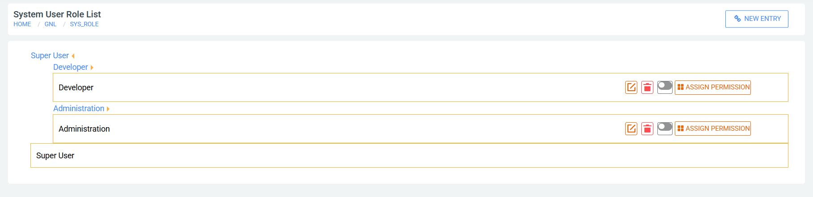
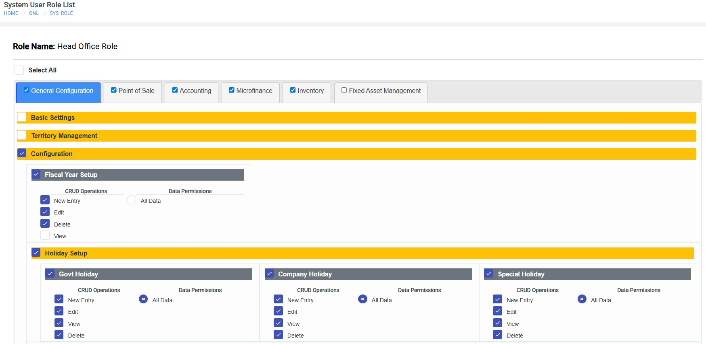
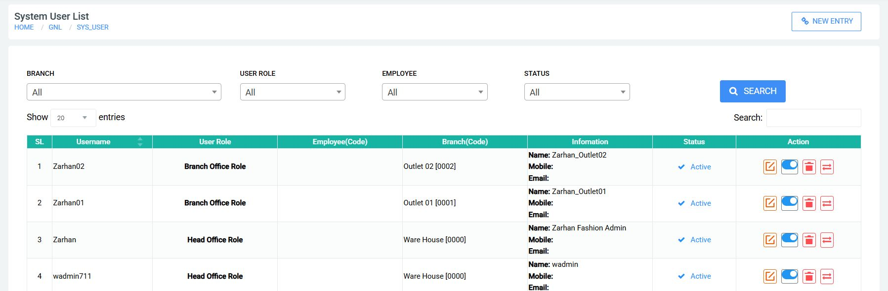

configuration
5.1 Role & User Management
Control system access and security. Define what functions different roles can perform and manage the individual accounts of your system users.
Purpose
To manage user roles and set access permissions, ensuring each user has the right functions based on their specific responsibilities.

×

BASIC MANAGEMENT
- New Role: Click + New Entry, fill in the role name, and save.
- Update: Click the icon to modify role details.
- View/Delete: Use for details or to remove a role.
Assigning Permissions
- In the Role List, click the Permission Icon for the chosen role.
- Tick Menu Items: Check modules (e.g., POS, Accounting) for access.
- Set Actions: For each menu, allow New Entry, Edit, View, or Delete.
- Visibility: Choose All Data or Restricted (own entries only).
- Click Save to apply the security matrix.

×

5.2 System User Setup
Purpose
Central interface for administrators to manage user accounts—including credentials, status, and role assignments.
Search & Filter: Locate users by Branch, Role, Employee Code, or Status.
New Entry: Click + New Entry and link a Username and Role to an Employee Code.
Account Actions
Reset Password
Click the Key icon to trigger a password reset instructions for the user.Activate / Deactivate
Use the toggle switch to instantly enable or disable a user account.Update User
Modify username, assigned role, or linked branch details.Delete User
Permanently remove the account from the system.

×